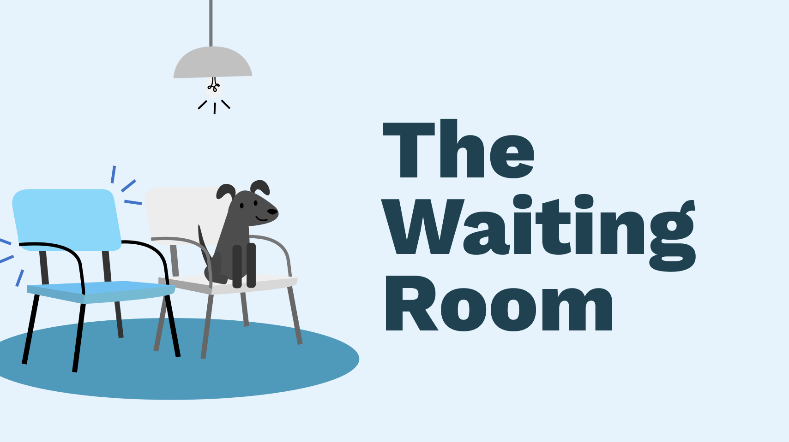

🏥 “How can patients be prioritized for medical assistance in light of covid-19?”
Front-end, Back-end, UX/UI Design
I created the front-end, design, and illustrations for this project. Additionally, I worked on Firebase authentication to allow users to log in to the site, and provided a way for users to access data that they have submitted to the database. I also created a map to search for hospitals nearby.
36 Hours
The covid-19 pandemic has caused massive overcrowding in hospitals, with a lot of hospitals reaching full capacity. There is also a high risk of coming into contact with the virus in physical waiting rooms and medical spaces.
I had the idea of making a platform that provided a way for patients to safely avoid overcrowding in hospitals and get access to resources based on need and severity (if they were at high risk of having covid or severe illnesses).


Graphics I made
I designed a couple of mockups for the project prior to development. Since the project was sillier than other projects I worked on, I wanted it to have a playful and youthful feel, hence the scribbles as part of the design. Despite this, I wanted the project to still look polished to some extent, so I worked a sans serif font into the design. We picked purple to use for the overall style of the project because we associated the color with sleeping.
We thought it would be easiest to collaborate on a Glitch project since we were working remotely. We settled on using Firebase, because we didn’t have experience setting up a database or account authentication and believed using an external service would be the best option for the project. We also thought that using APIs would be useful to implement data external to the project into the website.
Users can submit a form on our website, answering what type of symptoms they have, which are then triaged by the EndlessMedicalAPI. This information is then sent to a database that can easily be accessed by hospitals.

The form
To update and access any information they have submitted, users are able to log in securely through Google Authentication.

Google authentication
Users can also look for hospitals near them through the Google Maps API.

Finding hospitals nearby
It was my first time working with both Firebase authentication and the Firebase Realtime Database, so I learned about how to log in users into a website and how to send data to a database. It was also my first time working with the Google Maps JavaScript API as well as the Places API, so I learned more about how to use both.
The seventh iteration of Swamphacks, University of Florida's annual collegiate hackathon.
Endless Medical API, Firebase Realtime Database, Firebase Authentication, Google Maps JavaScript API, Google Places API, HTML, JavaScript, CSS
You can check out the code and demo it .